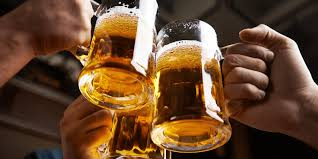

Let's rain with beer
Let's see how we can make a beer, simple and fast.
U don't like beer? Get back to the main page.
Below u will see how your beer must look like.

Description
Ingredients:
How to make it?
- Mashing. The first step in the making beer process is mashing.
- Separation. Once the mashing process is complete, the resulting liquid, called wort, is separated from the spent grains through a process called lautering.
- Boiling....
- Fermentation